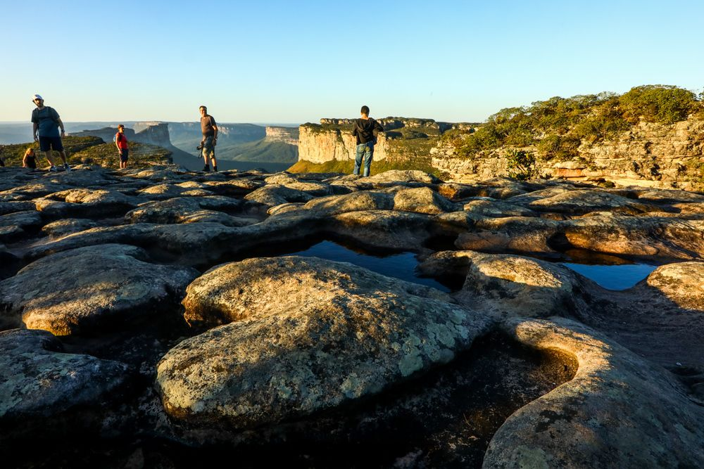

Conhecendo a chapada diamantina
O pôr do sol no alto do Morro do Pai Inácio abraça os turistas que chegam em busca de imersão na natureza da Chapada Diamantina. Do topo, a exuberante paisagem dá uma pequena ideia da dimensão da beleza que espera pelos viajantes. São mais de 38 mil km² ⏤ repletos de vegetação bem preservada, cachoeiras grandiosas, trilhas desafiadoras, grutas de beleza irretocável e charmosas cidades.
Tantas atrações juntas fazem da Chapada Diamantina, na Bahia, um dos melhores destinos do Brasil para quem busca aventura e ecoturismo. Não faltarão cenários incríveis para os dias de viagem. E o melhor é saber que a Chapada Diamantina tem natureza para todo tipo de viajante: dos que buscam passeios bem fáceis até os que desejam aventura extrema. A Chapada Diamantina tem beleza para todo mundo.
O que fazer na Chapada Diamantina?
Os principais pontos turísticos da Chapada Diamantina estão todos ligados ao ecoturismo.
Como:
- Morro do Pai Inácio.
- Cachoeira da Fumaça
- Poço Azul
- Poço Encantado
- Gruta da Pratinha
Características Geólogicas
- É um planalto com altitudes que variam entre 400 e 2.033 metros
- É formada por rochas calcárias, salitres, arenito, ígneas, Arqueanas e Paleoproterozóicas
- Apresenta cavernas e grutas, como o Poço Azul
Características culturais
- Possui patrimônio arquitetônico ligado ao garimpo, como imóveis tombados em Lençóis, Andaraí, Rio de Contas e Piatã
- A cidade de Lençóis é o principal destino para fazer turismo pela Chapada Diamantina